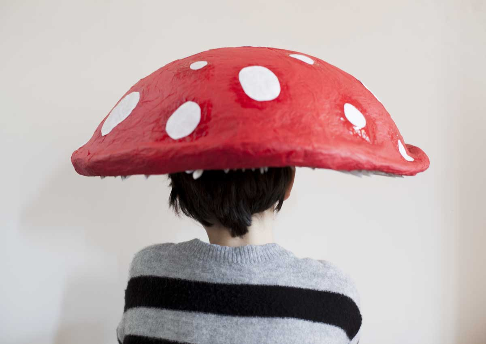
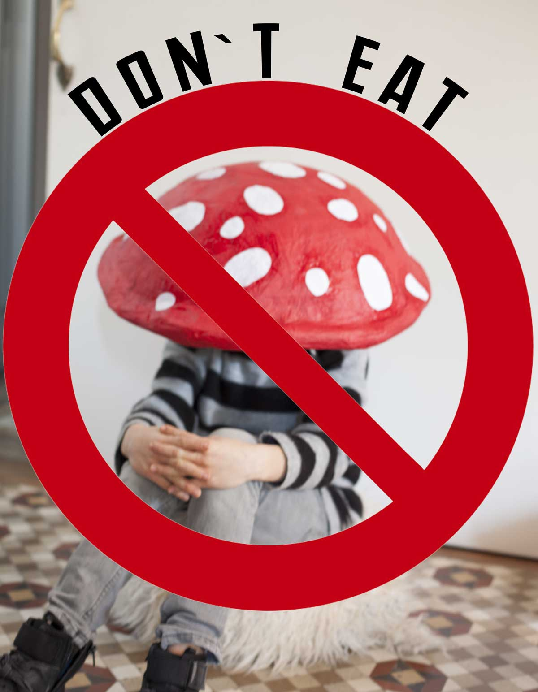
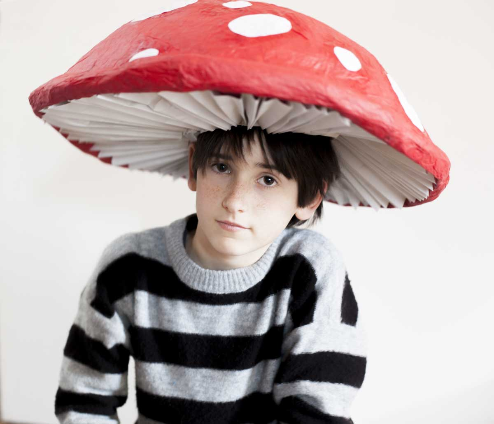
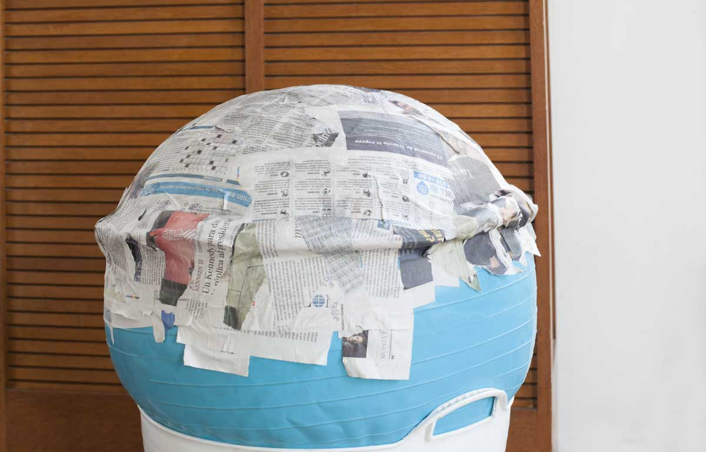
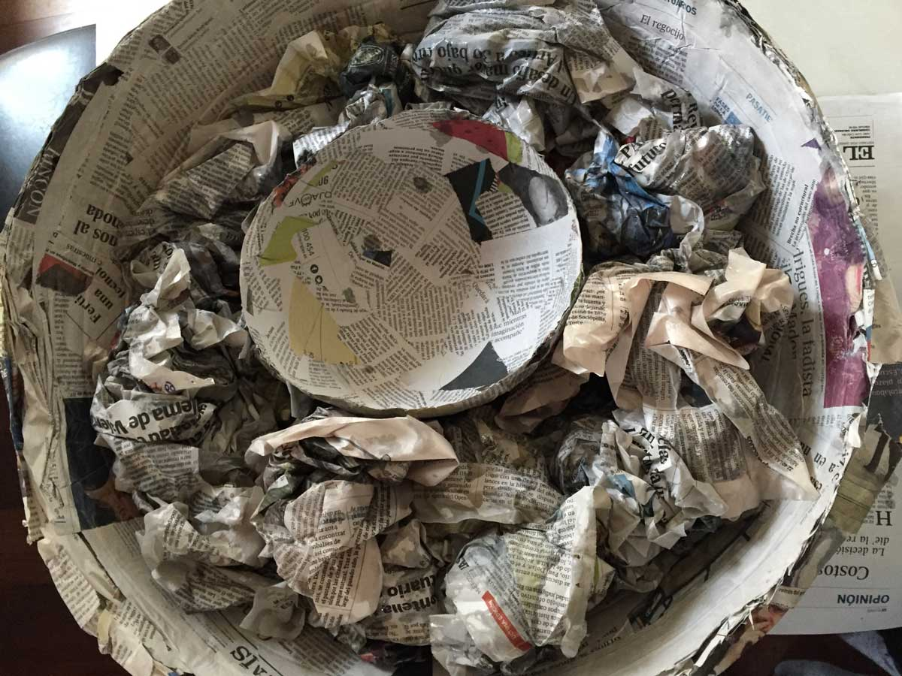

We meant to make something about healthy food… and ended up with a poisonous mushroom. It is papier-mâché: newspaper, red tissue paper and white dots. In the photos it is still drying.
What you need
- A ball or a large balloon (for the cap)
- A small balloon (for the stem)
- Newspaper and glue
- Red tissue paper and white paper for the dots
- Plenty of patience: every layer has to dry well

